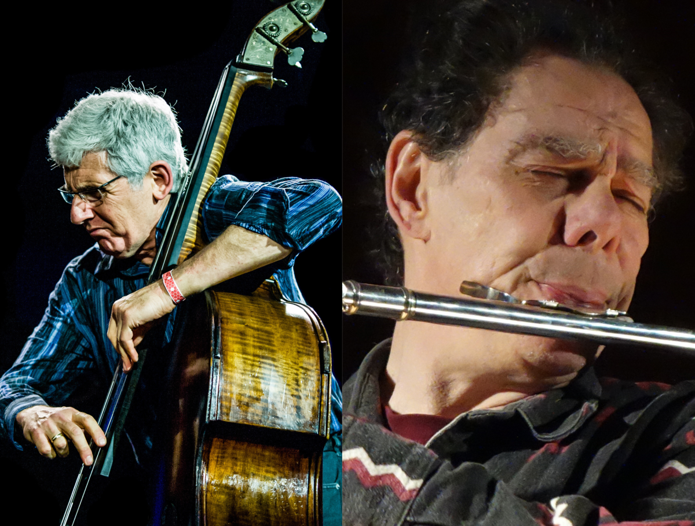

Robert Dick and Mark Dresser re-unite at the Fridman Gallery
2025, December 10

Robert Dick and Mark Dresser re-unite at the Fridman Gallery
2025, December 10
United States
On Friday, November 21, flutist Robert Dick and double bassist Mark Dresser reunited for a performance at the Fridman Gallery in New York City.Dick and Dresser started playing together in the 1980s, in various combinations as a duo or with other players also involved.
Before the performance, audience members were able to view the art exhibit on display by Alina Grasmann, House Of Spirits, which was on display from October 29 through December 6. The gallery described Grasmann's art as being "magical-realist paintings explore modernist architecture, blending the formal qualities of specific sites with their history." When Dick and Dresser started to play, almost all of the seats in the gallery for the audience were filled.
The performance lasted approximately 52 minutes. During the performance, Dick played the bass flute, the piccolo, and a flute fitted with a Glissando Headjoint, a modified headjoint he developed that allows for controlled glissandi. He employed many extended techniques, including multiphonics, glissandi, key percussion, and air sounds. Dresser employed many techniques while playing the double bass, including two-handed tapping, and percussive sounds, playing the bass with both his fingers and various bows.
When asked by email about the collaboration after the show, Dick stated: "Mark and I first improvised together in the 1980s, performing several times as a duo. We expanded into a trio, adding the drummer Gerry Hemingway, and then we became a quartet when pianist Denman Maroney joined the group, which we then named Tambastics in honor of our love of musical color, musical timbres.
"Tambastics performed together for about a decade and released a CD on Music and Arts Programs of America in 1992. Mark's move to La Jolla, California to become Professor of Bass at UCSD [University of California San Diego] and my move to Switzerland for personal reasons were among the catalysts precipitating Tambastics' dissolution.
"Our musical evolution, of course, continued with increasing passion over the decades. We both developed our solo musics extensively and were involved in very many collaborative projects. And while we now return to our roots in this totally improvised duo concert, we bring all we have become over the years in our journey through life and music."